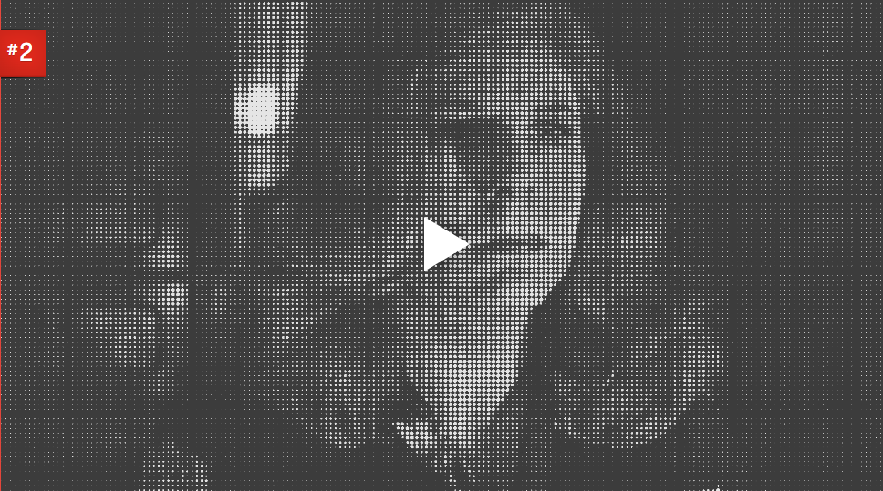

BEST HORROR SCENES
An ever growing collection featuring some of the best scenes in horror.
“Best Horror Scenes” is a collection of scenes I feel are some of the most affecting in horror. Some may be simple black cat scares, others may be more subdued or nuanced. Many come from films that aren't necessarily “horror” but have elements or threads of horror.
Best Horror Scenes is a love letter to the Horror film genre by Brandon Durham. Most film clips contain major spoilers, and it is recommended you don’t watch the clip if you plan on seeing the film.
Jacob’s Ladder (1990)
Directed by Adrian Lyne

The Tenant (1976)
Directed by Roman Polanski